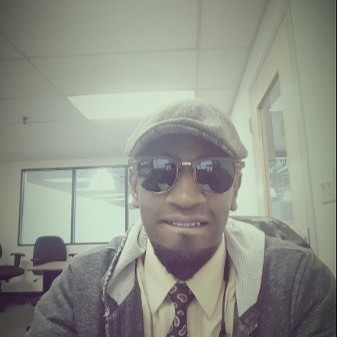

 My life has been a constant pursuit to always do something more and beyond what i actually see. Soon after my graduation in History I wanted to do something on my own and eshtablished a marketing buisness on my own. This exposed to the world of sales and of course doned a lot of life skills and real life experiences in meeting and working with new clients that i always wanted.
I always fancised a marketing and front end customer service kind of role and over the past seven years i have been working;
>Bose Corportation - As a Sales Specialist.
Verizon Wireless - As an Engagement Manager.
Neptune Inoop - Managing Director - Renewable Energy Sales
My goals and current path is to acquire skills to will set the course to acomplete career change,and in the Tech industry I've found the right tools to acomplishe this task
My experience with Stack Education has been very great. I feel like I've received the necessary tools in order to continue this journey and achiving more sucess